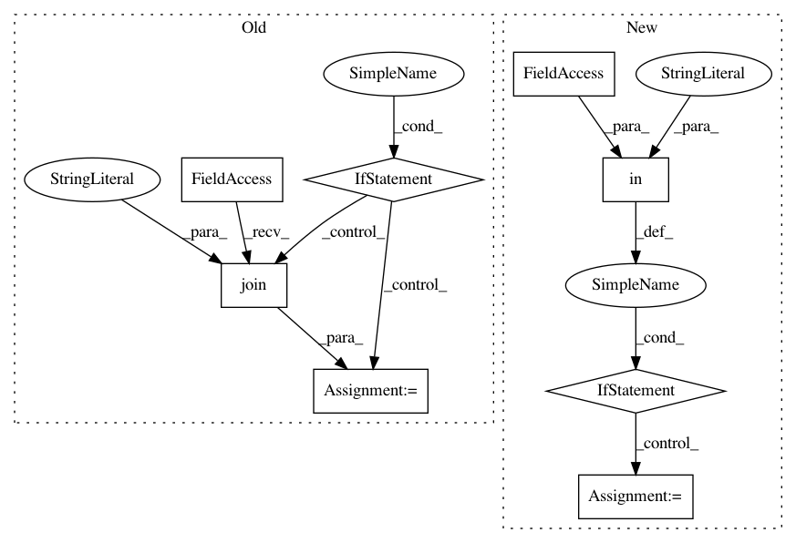

835d1af2e5c1fd9b45c2f609d937cecec138e93f,src/sagemaker/tensorflow/estimator.py,TensorFlow,hyperparameters,#TensorFlow#,361
Before Change
Return hyperparameters used by your custom TensorFlow code during model training.
hyperparameters = super(TensorFlow, self).hyperparameters()
if not self.checkpoint_path:
local_code = get_config_value("local.local_code", self.sagemaker_session.config)
if self.sagemaker_session.local_mode and local_code:
self.checkpoint_path = "/opt/ml/shared/checkpoints"
else:
self.checkpoint_path = os.path.join(self.output_path,
self._current_job_name, "checkpoints")
additional_hyperparameters = {"checkpoint_path": self.checkpoint_path,
"training_steps": self.training_steps,
"evaluation_steps": self.evaluation_steps,
"sagemaker_requirements": self.requirements_file}
After Change
if self._script_mode_enabled():
self.model_dir = self.model_dir or self._default_s3_path("model")
additional_hyperparameters = {"model_dir": self.model_dir}
if "parameter_server" in self.distributions:
enabled = self.distributions["parameter_server"].get("enabled", False)
additional_hyperparameters[self.LAUNCH_PS_ENV_NAME] = enabled
else:
additional_hyperparameters = {"checkpoint_path": self.checkpoint_path,
"training_steps": self.training_steps,
"evaluation_steps": self.evaluation_steps,
In pattern: SUPERPATTERN
Frequency: 3
Non-data size: 8
Instances
Project Name: aws/sagemaker-python-sdk
Commit Name: 835d1af2e5c1fd9b45c2f609d937cecec138e93f
Time: 2018-11-15
Author: icywang.rui@gmail.com
File Name: src/sagemaker/tensorflow/estimator.py
Class Name: TensorFlow
Method Name: hyperparameters
Project Name: fizyr/keras-retinanet
Commit Name: 6d68dca2aec44c5b1a73e6c9db5c5fbf6f731fd0
Time: 2018-09-11
Author: e.liscio@fizyr.com
File Name: keras_retinanet/bin/evaluate.py
Class Name:
Method Name: main
Project Name: fizyr/keras-retinanet
Commit Name: 6d68dca2aec44c5b1a73e6c9db5c5fbf6f731fd0
Time: 2018-09-11
Author: e.liscio@fizyr.com
File Name: keras_retinanet/bin/train.py
Class Name:
Method Name: main